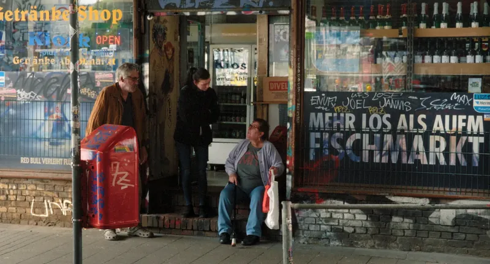

Sternbrücke Foreverab 8.10

Ein Film von Christian Hornung
DE 2026, 99 Min., Deutsch, Englisch mit deutschen Untertiteln
Am 8.10. mit anschließendem Filmgespräch.
Der Deutschlandfunk titelte: ein Flugzeugträger im Wohngebiet, und so sieht es auch aus. Seit dem 1. September ist die neue sogenannte „Monsterbrücke“ fertig, Züge und Bahnen fahren wieder und die eigentlich denkmalgeschützte alte Sternbrücke in Hamburg-Altona ist Geschichte. Nun überspannte schon das vor hundert Jahren errichtete und jetzt abgerissene Bauwerk kein lauschiges Plätzchen, oder war der Grund für den Denkmalschutz auf den ersten Blick erkennbar. …